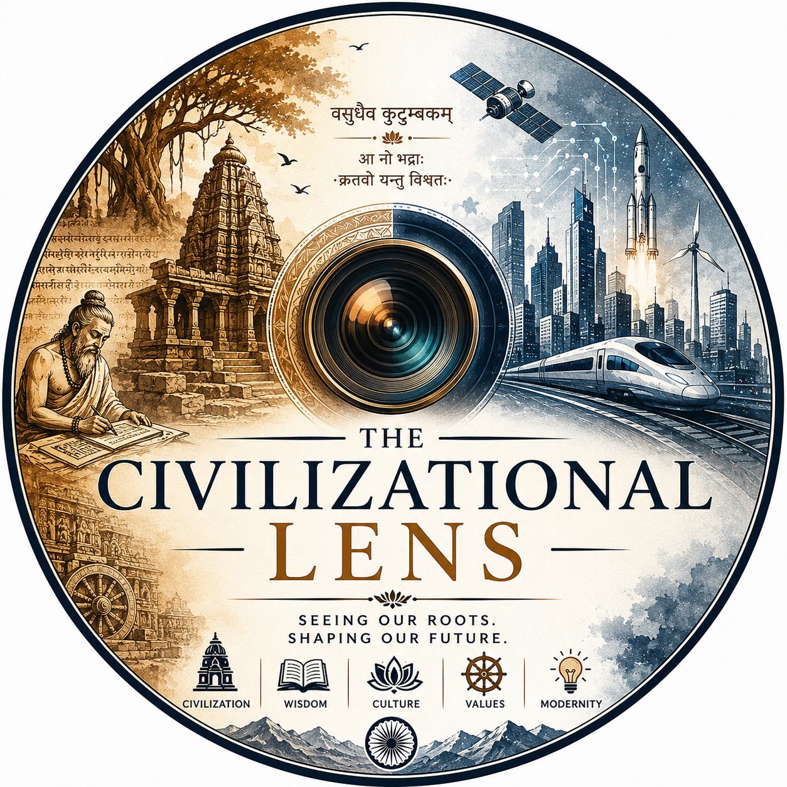

Seeing our roots. Shaping our future.
The Civilizational Lens is an independent platform dedicated to exploring civilization, history, Sanatana Dharma, science, coloniality, nation-building, and contemporary events through a long-term civilizational perspective.
This platform exists to understand the present through the lens of the past.
Here we explore:
The objective is not merely to inform, but to encourage reflection, civilizational self-understanding, and meaningful dialogue.
Understanding the civilizational foundations of societies.
Exploring the intersections of knowledge and tradition.
Examining historical and contemporary colonial structures.
Nation-building, development and responsibility.
Long-form reflections and analysis.